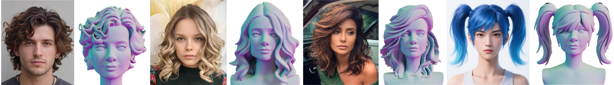

We take the images and corresponding LRM meshes (above) as input to generate hair strands (below).
Abstract
The fundamental limitation of traditional strand-based modeling is not simply data scarcity, but the ill-posedness of inferring complex 3D fields from 2D imagery without structural constraints. This unconstrained regression leads to catastrophic failures in resolving both global occlusion (e.g., in ponytails) and local directionality (e.g., in curls), resulting in over-smoothed, plausible-but-incorrect geometries. To resolve this, we integrate the strong geometric priors of Large Reconstruction Models (LRMs) into the strand generation pipeline. Using the LRM mesh as a structural anchor, we employ a novel Dual Orientation AutoEncoder to lift coarse geometry into high-fidelity strands. By resolving vector field singularities through latent-space optimization and surface-guided refinement, the method effectively disentangles complex topological structures, setting a new benchmark for robustness and accuracy in hair reconstruction.
Datasets and DOAE training
From strand-based hairstyle data, we construct training pairs by aligning each hairstyle to a canonical bust and turning it into a training tuple: a fused hair–bust surface mesh (providing SDF supervision), a salient point cloud sampled from cluster-representative strands to emphasize regions with strong directional change (curls, partings, flow boundaries), and a uniform point cloud that captures the overall hair volume and the underlying bust. Each sample carries position, local orientation, and a hair/bust label.
The Dual Orientation AutoEncoder (DOAE) encodes these dual point clouds into a compact latent code via dual cross-attention plus self-attention, and decodes an implicit field that jointly predicts signed distance, 3D orientation, and a hair/bust classification at arbitrary query points.
Framework
Given an input portrait, we segment the hair region and composite it onto a canonical template bust to form a standardized image, then use an off-the-shelf image-to-3D LRM to obtain a coarse surface mesh that serves as a structural anchor. The mesh and image condition the DOAE, whose latent code is optimized at run time under three supervisory signals: SDF values, reprojected 2D orientation cues, and screen-space hair segmentation (estimated via HairStep and back-projected onto the mesh). Since LRMs naturally accept multiple views, the same pipeline runs unchanged in both single- and multi-view settings, and users may optionally paint sparse directional strokes to guide growth.
The decoded orientation field is then refined for explicit strand extraction. A surface-guided correction step projects orientations onto the mesh tangent plane to prevent strand–surface penetration, after which we extract explicit strands from the corrected field. Finally, a iterative refinement feeds the first-pass strands back into the encoder to regress a better latent code for a second optimization, which already converges in a single iteration. The reconstructed strands generalize across diverse domains (realistic portraits, cartoons) and complex styles (curls, ponytails).
Results Gallery

A gallery of reconstructed hairstyles demonstrating the versatility and accuracy of our method across diverse hair types and styles, including straight, wavy, curly, long, and braided hair.
Convert to Hair Cards

Our strand-based reconstructions can be readily converted into hair cards, a lightweight representation widely used in real-time graphics and game production, making the results directly usable in downstream art pipelines.